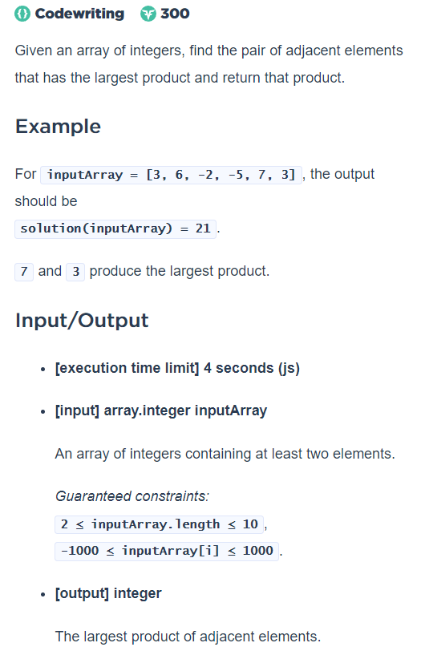

EJERCICIOS CON JAVASCRIPT
Entrada: un número pedido con un prompt.
Salida: Una tabla con los números del 1 al número dado con sus cuadrados y cubos.Utiliza document.write para producir la salida
Entrada: Usando un prompt se pide el resultado de la suma de 2 números generados de manera aleatoria.
Salida: La página debe indicar si el resultado fue correcto o incorrecto, y el tiempo que tardó el usuario en escribir la respuesta.Función: contador. Parámetros: Un arreglo de números.
Regresa: La cantidad de números negativos en el arreglo, la cantidad de 0's, y la cantidad de valores mayores a 0 en el arreglo.Función: promedios. Parámetros: Un arreglo de arreglos de números.
Regresa: Un arreglo con los promedios de cada uno de los renglones de la matriz.Función: inverso. Parámetros: Un número.
Regresa: El número con sus dígitos en orden inverso.Crea una solución para un problema de tu elección (puede ser algo relacionado con tus intereses, alguna problemática que hayas identificado en algún ámbito, un problema de programación que hayas resuelto en otro lenguaje, un problema de la ACM, entre otros). El problema debe estar descrito en un documento HTML, y la solución implementada en JavaScript, utilizando al menos la creación de un objeto, el objeto además de su constructor deben tener al menos 2 métodos. Muestra los resultados en el documento HTML.
TABLA
Suma
Contador
Promedios
Inverso
PROBLEMA BASICO DE 

Problema